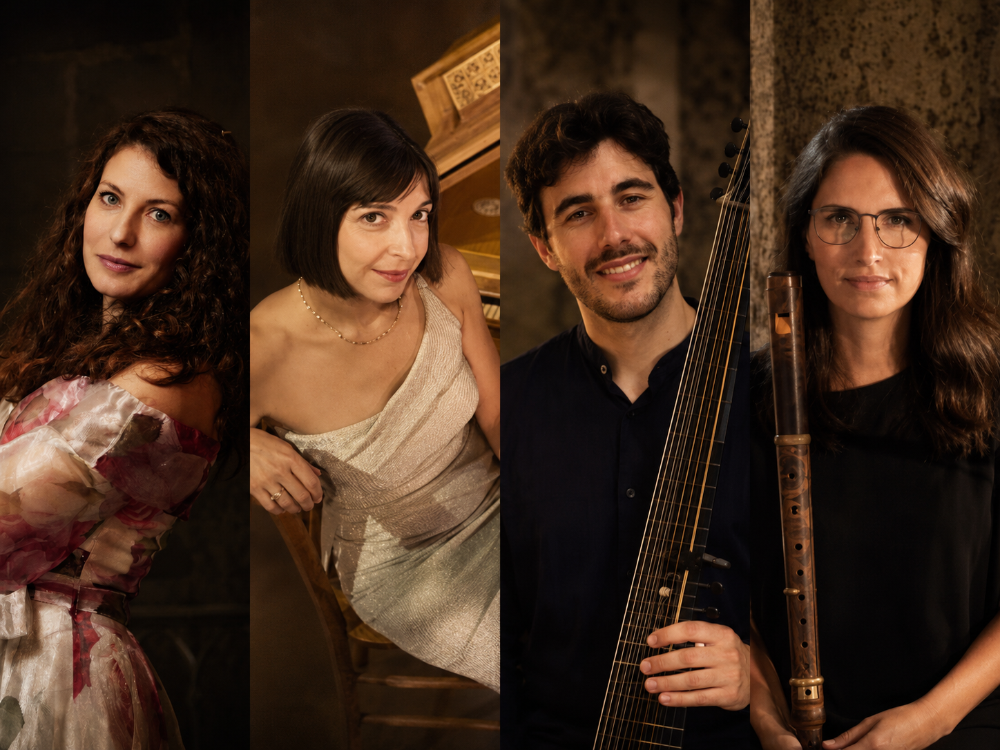
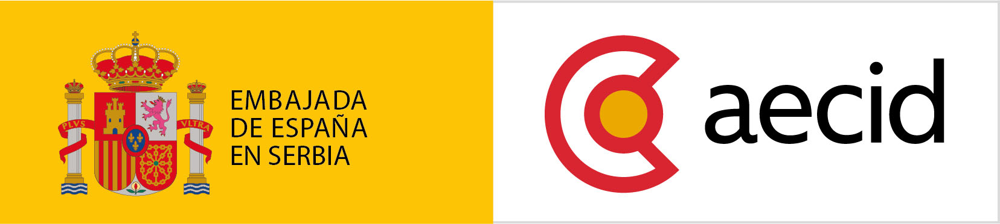

Ansambl

Ulaznice u prodaji
Musica Antiqua Neoplantensis
Affetti d’amore
11. oktobar 2026.
20:00
Crkva Sv. Elizabete
Ćirila i Metodija 11
Telep, Novi Sad
Izvođači
Umetnici
Meila Tomé — blok flauta i traverso
Radoslava Vorgić — sopran
Rafael Arjona Ruz — barokna gitara i lauta
Bojana Dimković — čembalo
O ansamblu
Musica Antiqua Neoplantensis je ansambl iz Novog Sada posvećen istorijski informisanoj interpretaciji muzike 17. i 18. veka. Ansambl okuplja umetnike koji se bave istorijskim instrumentima i vokalnim repertoarom baroka, sa posebnim interesovanjem za povezivanje istraživanja, izvođačke prakse i savremenog koncertnog iskustva.
Repertoar ansambla obuhvata vokalnu i instrumentalnu muziku italijanskog baroka, kao i programe koji istražuju kulturne veze između Mediterana, srednje Evrope i prostora današnje Vojvodine.
O programu
Affetti d’amore istražuje različita lica ljubavi u italijanskoj baroknoj muzici — nežnost, čežnju, strast, ljubomoru i razočaranje. Kroz arije, kantate i instrumentalne kompozicije, program prati način na koji su barokni kompozitori pretvarali snažna emotivna stanja — affetti — u muziku.
U intimnom zvuku glasa, istorijskih duvačkih i gudačkih instrumenata i basso continua, muzika prelazi od pastoralne nežnosti do virtuoznosti i dramatičnih kontrasta karakterističnih za italijanski barok.
Kompozitori
- Giovanni Bononcini
- Alessandro Scarlatti
- Nicola Porpora
- Giuseppe Sammartini
Uz podršku

Učešće Rafaela Arjone Ruza u ovom programu realizuje se uz podršku Acción Cultural Española (AC/E), kroz Program za internacionalizaciju španske kulture (PICE), kao i uz podršku Ambasade Španije u Srbiji i AECID-a.
With the support of Acción Cultural Española (AC/E) through the Programme for the Internationalisation of Spanish Culture (PICE).